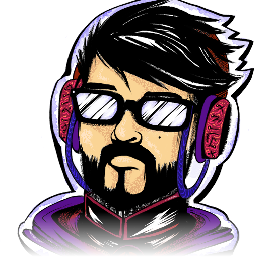
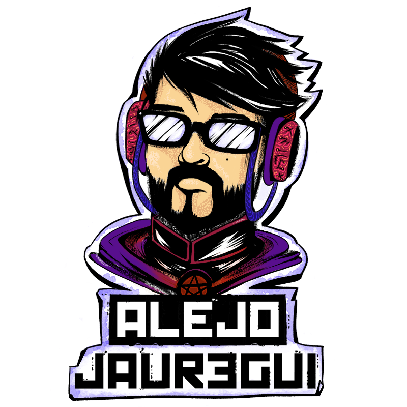

The Architect
Arquitectura empresarial y de soluciones, gobierno de TI y nube (GCP, AWS, Azure) en banca y seguros.

ALEJO
Bienvenido al Nexus
Arquitecto Empresarial · Game Designer · Creador
Ingeniero de Sistemas con más de 10 años en tecnología. De día diseño arquitecturas para la banca; el resto del tiempo diseño mundos, juegos y videos.
Soy Ingeniero de Sistemas (Fundación Universitaria Konrad Lorenz) y Máster en Diseño y Desarrollo de Videojuegos (VIU – Universidad Internacional de Valencia). Vivo en Bogotá, Colombia.
Trabajo como Arquitecto Empresarial en Banco Davivienda, en el frente de innovación: diseño arquitecturas AS-IS y TO-BE, defino lineamientos y estándares, evalúo proveedores y startups, y diseño soluciones cloud en GCP, AWS y Azure.
Mi otra mitad es el game design: prototipos en Unity, narrativa interactiva y Gamer's Cuts, mi sección sobre historia y diseño de videojuegos.
class AlejoProfile {
constructor() {
this.name = "Alejandro Jáuregui";
this.class = ["Enterprise Architect", "Game Designer"];
this.base = "Bogotá, CO";
this.guild = "Banco Davivienda";
this.stats = { INT: "Architecture", WIS: "Innovation", CHA: "Storytelling" };
}
}Arquitectura empresarial y de soluciones, gobierno de TI y nube (GCP, AWS, Azure) en banca y seguros.
Innovación y evaluación de startups, transformación digital y desarrollo guiado por especificaciones con IA.
Diseño y desarrollo de videojuegos en Unity, narrativa interactiva y video para YouTube.
Misiones completadas y roles activos.
Banco Davivienda Activa
HDI Seguros Colombia Completada
Serfiscal S.A. Side quest
Fundación Universitaria Konrad Lorenz Side quest
Banco Davivienda Tutorial
VIU – Universidad Internacional de Valencia
Fundación Universitaria Konrad Lorenz
Fundación Universitaria Konrad Lorenz
Lo que estoy construyendo y lo que ya construí.
Intro de mi sección de YouTube: un viaje por siete generaciones de videojuegos, hecho 100 % con código (HTML, WebGL y GSAP renderizados a video con HyperFrames). Música y efectos de sonido compuestos en código.
HyperFrames · WebGL · GSAP · Python
2026
Mi trabajo final del Máster (VIU): la historia de Aaron, un granjero que se convierte en mago para rescatar a su hija. Diseño y desarrollo en Unity.
Unity · C#
App de hábitos y tareas gamificada como un RPG: cada misión da XP y hace progresar a tu personaje. Pensada local-first, con sincronización opcional e IA con tu propia API key, y cuatro skins visuales sobre un mismo sistema de diseño.
React Native · Expo · TypeScript · Supabase
En desarrolloCódigo privado
Mi portal personal: blog en Markdown con editor propio, API REST, galería multimedia y un reproductor de música integrado.
Django · Django Ninja · Tailwind
En desarrolloCódigo privado
Un estudio de IA local en mi Mac: modelos de Ollama con roles fijos (arquitecto, crítico, director de arte y guionista) que mis agentes consultan como segunda opinión, sin gastar nube.
Ollama · LM Studio · Python · Claude Code
2026Código privado
Prototipo de videojuego narrativo para niños que cambia la historia según las emociones que el sistema detecta en el jugador. Mi tesis de Ingeniería de Sistemas.
2015 – 2016
Cursos y certificaciones, con su ID de credencial.
Donde hablo de videojuegos, anime y lo que voy construyendo.
¿Tienes una misión épica o necesitas un aliado para tu party? Escríbeme.